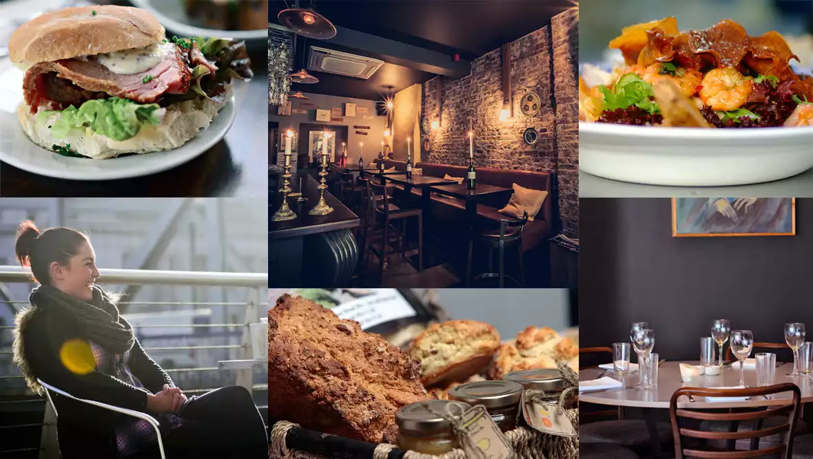

Bienvenido a este rincón dedicado a descubrir Irlanda, una isla donde la historia se mezcla con la magia, los paisajes parecen sacados de un cuento y cada pueblo guarda una historia lista para ser contada. Desde los acantilados que se pierden en el Atlántico hasta las calles empedradas de Dublín llenas de música y tradición, Irlanda invita a explorarla sin prisa. En este blog te llevaré por sus rincones más emblemáticos, sus leyendas, su cultura vibrante y la calidez de su gente. ¿Listo para comenzar este viaje verde esmeralda? 🌿✨
¿A dónde querés viajar ahora?
Buscá ciudades, consejos o destinos de Irlanda